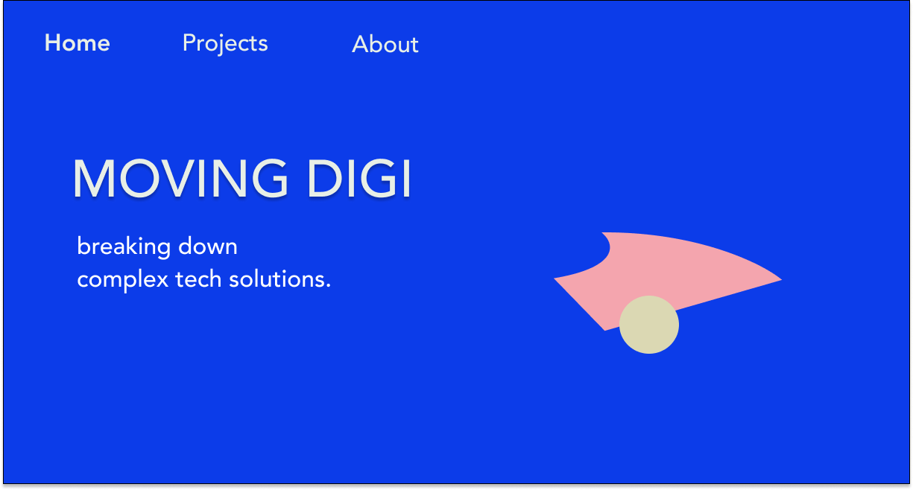

Web Design: Moving DIGI

Moving DIGI wanted a simple, modern look for their website, and explicitly asked for this beautiful bold color. I created a fitting color profile with this bold blue in mind. The client further asked for graphic elements, that symbolizes a process - something morphing from chaos to order, the coming together of ideas creating a concept.